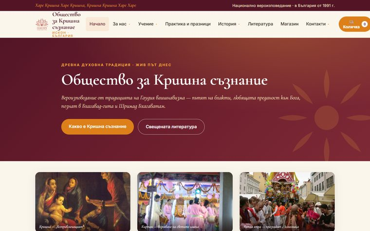
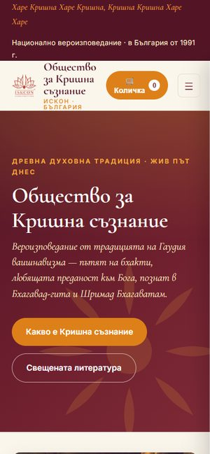
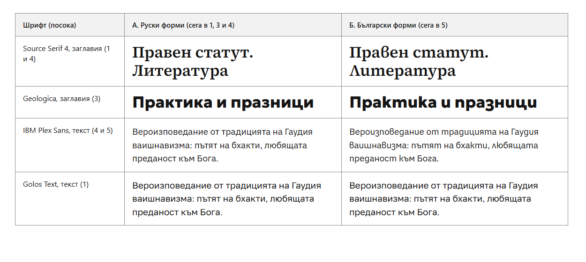

Изходна точка: макетът на Махендра Прабху
Около 20 страници и магазин в един файл; оттам са всички текстове в посоките.


Прототипи на дизайна за официалния сайт на Обществото за Кришна съзнание в България. Всяка посока има начална страница и страницата „Какво е Кришна съзнание“ в същия стил. Текстовете са от макета на Махендра Прабху и от сайта на общността iskconsofia.com; води нашата ятра в България.
Около 20 страници и магазин в един файл; оттам са всички текстове в посоките.


Някои шрифтове имат и български форми на буквите (т прилича на m, и на u, д на g). А е обичайният вид, Б са българските форми. Изборът важи за всяка посока.

Изберете първа, втора и трета посока, вида на буквите и напишете бележка. После копирайте избора и го изпратете на Питамбара.
Текстовете са от макета на Махендра Прабху и от iskconsofia.com (храмът, работното време, програмите, Ратха ятра, празниците). Сменени са пунктуацията (тире с интервали и кавички) и думата за ежедневната практика: „програми и класове“, „духовен живот“, „книги“. Няма измислени дати, часове и числа. Каквото сайтът на общността не потвърждава, е махнато в 1 до 4 (например центровете извън София); в 5 градовете стоят на картата с „в процес на допълване“. Магазин няма: книгите са със заглавие и описание.
Страниците са проверени в Chromium на телефон и компютър, с движение и без. Още не са проверени на истински телефон, в Safari и във Firefox. Търсачките не ги показват (noindex).
Снимки: ИСКОН София (iskconsofia.com). Картата на София в 5: © участниците в OpenStreetMap (ODbL); контурите на България в 5: Natural Earth (обществено достояние). Логото: ISKCON Communications.